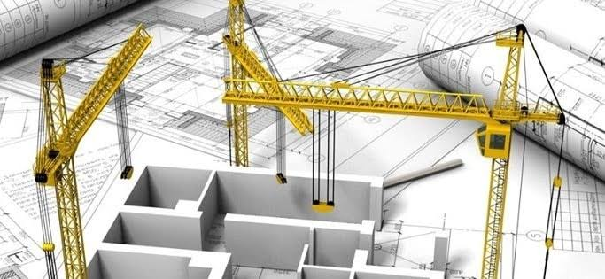

• Modern tool usage:
Create, select, and apply appropriate techniques, resources, and modern engineering and IT tools including prediction
and modeling to complex engineering activities with an understanding of the limitations.
• The engineer and society:
Apply reasoning informed by the contextual knowledge to assess societal, health, safety,
legal and cultural issues and the consequent responsibilities relevant to the professional engineering practice.
• Environmental and sustainability:
Understand the impact of the professional engineering solutions in societal and environmental
contexts and demonstrate the knowledge of, and need for sustainable development.
• Ethics:
Apply ethical principles and commit to professional ethics and responsibilities and norms of the engineering practice.

• Communication:
Communicate effectively on complex engineering activities with the engineering community and with
society at large, such as , being able to comprehend and write effective reports and design documentation,
make effective presentations, and give and receive clear instructions.
• Project management and finance:
Demonstrate knowledge and understanding of the engineering and management principles and apply
these to one’s own work , as a member and leader in a team, to manage projects and in multidisciplinary environments.
• Life-Long learning:
Recognize the need for, and have the preparation and ability to engage in independent and life-long
learning in the broadest context of technological change.